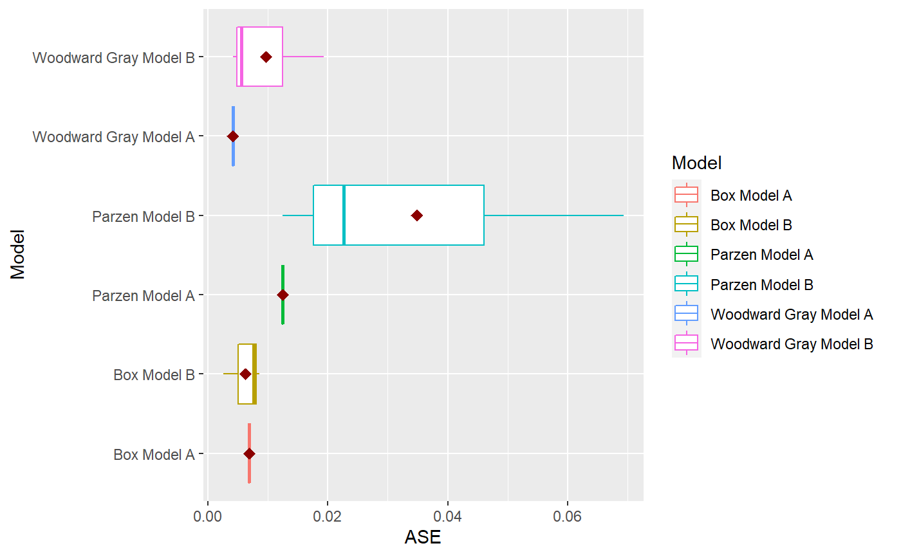

ModelCompareUnivariate.RdR6 class ModelCompareUnivariate
R6 class ModelCompareUnivariate
tswgewrapped::ModelCompareBase -> ModelCompareUnivariate
Inherited methods
new()Initialize an object to compare several Univatiate Time Series Models
ModelCompareUnivariate$new( data = NA, mdl_list, n.ahead = NA, batch_size = NA, step_n.ahead = TRUE, verbose = 0 )
dataA Univariate Time Series Realization
mdl_listA named list of all models (see format below)
n.aheadThe number of observations used to calculate ASE or forecast ahead
batch_sizeIf any of the models used sliding ase method, then this number indicates the batch size to use
step_n.aheadIf using sliding window, should batches be incremented by n.ahead (Default = TRUE)
verboseHow much to print during the model building and other processes (Default = 0)
A new `ModelCompareUnivariate` object.
get_data_var_interest()Returns the dependent variable data only
ModelCompareUnivariate$get_data_var_interest()
The dependent variable data only
plot_multiple_realizations()Creates multiple realization of each model. Useful to check model appropriateness.
ModelCompareUnivariate$plot_multiple_realizations( n.realizations = 4, lag.max = 25, seed = NA, plot = c("all"), scales = "free_y" )
n.realizationsNumber of realization to create (Default: 4)
lag.maxlag.max to plot for ACF (Default: 25)
seedThe seed to use for generating realizations
plotA vector of options to plot (Default = c("all")) Other options: 'realization', 'acf', 'spectrum'
scalesThe scales argument to be passed to ggplot facet_wrap layer (Default = 'free_y') Other appropriate options: 'fixed'
evaluate_residuals()For the models for which the residuals have been provided, this method will check whetehr the residuals are white noise or not. (1) Plots the residuals and the ACF values (2) Performs the Ljung-Box test for K = 24 and K = 48
ModelCompareUnivariate$evaluate_residuals(lag.max = 50)
lag.maxThe maximum lag to plot for the ACF
A dataframe containing the results of the 2 Ljung-Box tests
summarize_build()Not applicable for the Univariate Compare, since we are passing already build models
ModelCompareUnivariate$summarize_build()
clone()The objects of this class are cloneable with this method.
ModelCompareUnivariate$clone(deep = FALSE)
deepWhether to make a deep clone.
library(tswge) data("airlog") # Woodward Gray Airline Model phi_wg = c(-0.36, -0.05, -0.14, -0.11, 0.04, 0.09, -0.02, 0.02, 0.17, 0.03, -0.10, -0.38) d_wg = 1 s_wg = 12 # Parzen Model phi_pz = c(0.74, 0, 0, 0, 0, 0, 0, 0, 0, 0, 0, 0.38, -0.2812) s_pz = 12 # Box Model d_bx = 1 s_bx = 12 theta_bx = c(0.40, 0, 0, 0, 0, 0, 0, 0, 0, 0, 0, 0.60, -0.24) models = list("Woodward Gray Model A" = list(phi = phi_wg, d = d_wg, s = s_wg, sliding_ase = FALSE), "Woodward Gray Model B" = list(phi = phi_wg, d = d_wg, s = s_wg, sliding_ase = TRUE), "Parzen Model A" = list(phi = phi_pz, s = s_pz, sliding_ase = FALSE), "Parzen Model B" = list(phi = phi_pz, s = s_pz, sliding_ase = TRUE), "Box Model A" = list(theta = theta_bx, d = d_bx, s = s_bx, sliding_ase = FALSE), "Box Model B" = list(theta = theta_bx, d = d_bx, s = s_bx, sliding_ase = TRUE) ) mdl_compare = ModelCompareUnivariate$new(data = airlog, mdl_list = models, n.ahead = 36, batch_size = 72)#> #> Batch Size has not been specified. Will assume a single batch. #> Batch Size has not been specified. Will assume a single batch. #> Batch Size has not been specified. Will assume a single batch.NULL# Plots the historgam of the ASE values for each model. # This is especially useful when models using a sliding window for ASE calculations. mdl_compare$plot_boxplot_ases()#> Warning: `fun.y` is deprecated. Use `fun` instead.#> Warning: `show_guide` has been deprecated. Please use `show.legend` instead.#> # A tibble: 12 x 5 #> Model ASE Time_Test_Start Time_Test_End Batch #> <chr> <dbl> <dbl> <dbl> <dbl> #> 1 Woodward Gray Model A 0.00419 109 144 1 #> 2 Woodward Gray Model B 0.0193 37 72 1 #> 3 Woodward Gray Model B 0.00563 73 108 2 #> 4 Woodward Gray Model B 0.00419 109 144 3 #> 5 Parzen Model A 0.0125 109 144 1 #> 6 Parzen Model B 0.0227 37 72 1 #> 7 Parzen Model B 0.0693 73 108 2 #> 8 Parzen Model B 0.0125 109 144 3 #> 9 Box Model A 0.00690 109 144 1 #> 10 Box Model B 0.00261 37 72 1 #> 11 Box Model B 0.00762 73 108 2 #> 12 Box Model B 0.00862 109 144 3# The following method gives 2 plots # (1) Plots the forecasts for each model along with the realization. # (2) Plots the upper and lower limits for each model along with the realization. # In both cases, this marks each batch using a background color for ease of comparison. # only_sliding = TRUE will only plot forecsts for models using sliding ASE calculations. mdl_compare$plot_batch_forecasts(only_sliding = TRUE)#> Warning: Removed 108 row(s) containing missing values (geom_path).#> Warning: Removed 108 row(s) containing missing values (geom_path).#> Warning: Removed 108 row(s) containing missing values (geom_path).#> $forecasts #> # A tibble: 576 x 5 #> Model Time f ll ul #> <chr> <dbl> <dbl> <dbl> <dbl> #> 1 Woodward Gray Model B 1 NA NA NA #> 2 Woodward Gray Model B 2 NA NA NA #> 3 Woodward Gray Model B 3 NA NA NA #> 4 Woodward Gray Model B 4 NA NA NA #> 5 Woodward Gray Model B 5 NA NA NA #> 6 Woodward Gray Model B 6 NA NA NA #> 7 Woodward Gray Model B 7 NA NA NA #> 8 Woodward Gray Model B 8 NA NA NA #> 9 Woodward Gray Model B 9 NA NA NA #> 10 Woodward Gray Model B 10 NA NA NA #> # ... with 566 more rows #> #> $batch_rects #> xstart xend Batch #> 1 37 72 1 #> 2 73 108 1 #> 3 109 144 1 #># This method statistically compares all the models that use a sliding window ASE calculation mdl_compare$statistical_compare()#> Df Sum Sq Mean Sq F value Pr(>F) #> Model 2 0.001460 0.0007298 2.197 0.192 #> Residuals 6 0.001993 0.0003322 #> #> #> Tukey multiple comparisons of means #> 95% family-wise confidence level #> #> Fit: aov(formula = ASE ~ Model, data = results) #> #> $Model #> diff lwr upr #> Parzen Model B-Box Model B 0.028566162 -0.01709432 0.07422664 #> Woodward Gray Model B-Box Model B 0.003429999 -0.04223048 0.04909048 #> Woodward Gray Model B-Parzen Model B -0.025136163 -0.07079665 0.02052432 #> p adj #> Parzen Model B-Box Model B 0.2134940 #> Woodward Gray Model B-Box Model B 0.9712778 #> Woodward Gray Model B-Parzen Model B 0.2838256 #>#> Call: #> aov(formula = ASE ~ Model, data = results) #> #> Terms: #> Model Residuals #> Sum of Squares 0.001459617 0.001993128 #> Deg. of Freedom 2 6 #> #> Residual standard error: 0.01822602 #> Estimated effects may be unbalanced#> # A tibble: 12 x 5 #> Model ASE Time_Test_Start Time_Test_End Batch #> <chr> <dbl> <dbl> <dbl> <dbl> #> 1 Woodward Gray Model A 0.00419 109 144 1 #> 2 Woodward Gray Model B 0.0193 37 72 1 #> 3 Woodward Gray Model B 0.00563 73 108 2 #> 4 Woodward Gray Model B 0.00419 109 144 3 #> 5 Parzen Model A 0.0125 109 144 1 #> 6 Parzen Model B 0.0227 37 72 1 #> 7 Parzen Model B 0.0693 73 108 2 #> 8 Parzen Model B 0.0125 109 144 3 #> 9 Box Model A 0.00690 109 144 1 #> 10 Box Model B 0.00261 37 72 1 #> 11 Box Model B 0.00762 73 108 2 #> 12 Box Model B 0.00862 109 144 3# This method returns the metrics (ASE values) or forecasts for each model # 'only_sliding' If set to TRUE, only the models that use a sliding window # ASE calculation will be returned # 'ases' If set to TRUE, this method will return the ASE value(s) # Single value for models that don't use sliding ASEs and # Multiple values (one per batch) for models that use sliding window # ASE calculations # If set to FALSE, this function will return the model forecasts and # upper and lower confidence intervals. forecasts = mdl_compare$get_tabular_metrics(ases = FALSE) print(forecasts)#> # A tibble: 1,008 x 5 #> Model Time f ll ul #> <chr> <dbl> <dbl> <dbl> <dbl> #> 1 Woodward Gray Model A 1 NA NA NA #> 2 Woodward Gray Model A 2 NA NA NA #> 3 Woodward Gray Model A 3 NA NA NA #> 4 Woodward Gray Model A 4 NA NA NA #> 5 Woodward Gray Model A 5 NA NA NA #> 6 Woodward Gray Model A 6 NA NA NA #> 7 Woodward Gray Model A 7 NA NA NA #> 8 Woodward Gray Model A 8 NA NA NA #> 9 Woodward Gray Model A 9 NA NA NA #> 10 Woodward Gray Model A 10 NA NA NA #> # ... with 998 more rows